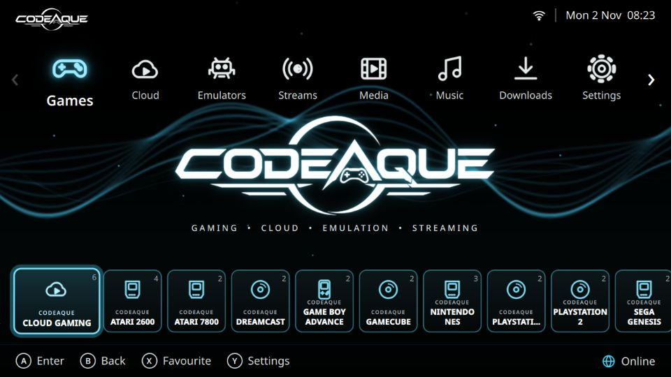
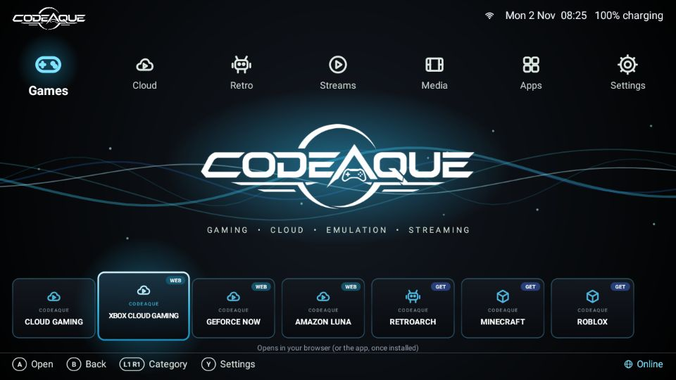
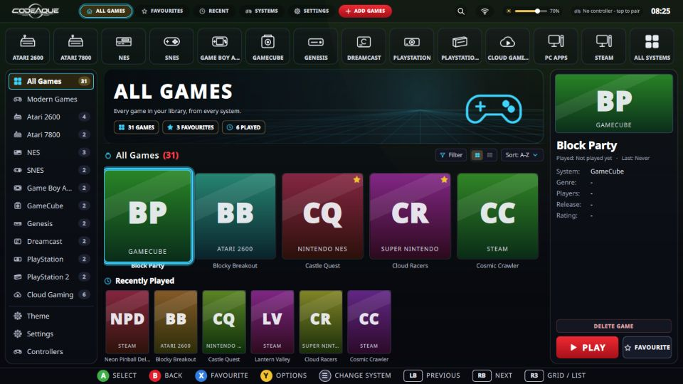
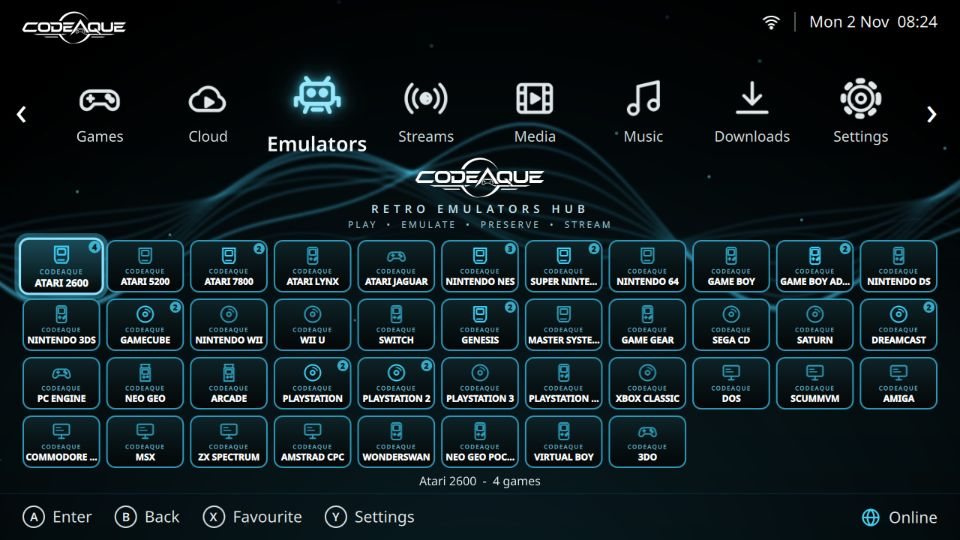
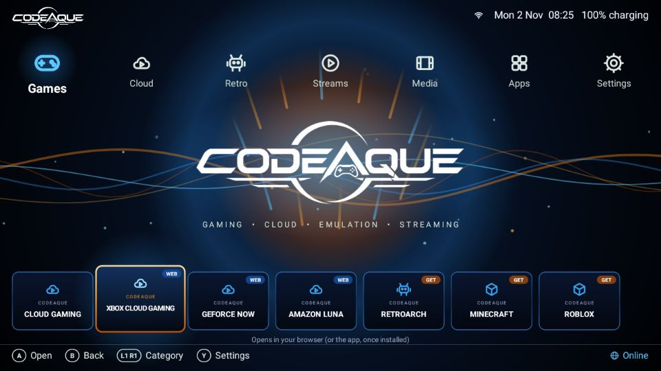
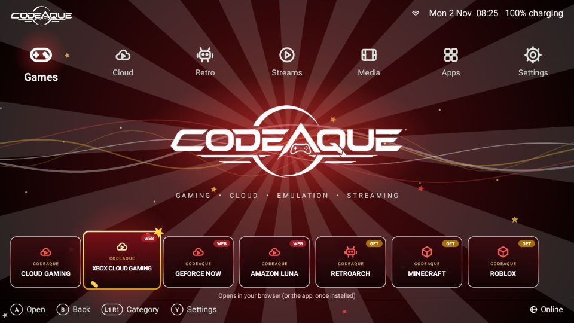

Download for PC
Install CodeAque next to Windows (dual boot) with the Live USB, or add it to a Linux PC you already have.
Live USB (dual boot)
A USB stick that starts the PC straight into CodeAque. Try it without changing anything, or install it next to Windows.
Live USB imageDownload both .iso.part1 and .iso.part2 files and SHA256SUMS. The image is from 0.5.9 — once installed, use Settings > Update CodeAque to get the latest version.
Already on Linux?
Get the latest app and run the installer.
Latest releasegit clone https://github.com/hoodlumasylum/codeaque.git
cd codeaque && ./install.shDual-boot guide
- Make the stick. On Windows, join the two parts (
copy /b codeaque-live-0.5.9.iso.part1 + codeaque-live-0.5.9.iso.part2 codeaque-live-0.5.9.iso), then write the.isoto a 16 GB+ USB stick with Rufus in ISO mode. - Make room. In Windows open Disk Management, right-click your C: drive, choose Shrink Volume and free at least 40 GB.
- Start from the stick. Restart and tap the boot-menu key (often F12, F11, F8 or Esc) and pick the USB stick.
- Try or install. Choose Try CodeAque to look around, or Install CodeAque. On Installation type keep Install alongside Windows Boot Manager.
- Pick at every start. After installing, a menu lets you choose CodeAque or Windows each time the PC starts.
Full step-by-step guide: Live USB guide. No games, ROMs, BIOS files, firmware or keys are included — bring your own.
Handheld & Win600
A big-text, gamepad-only Handheld mode made for 1280x720 handhelds such as the Anbernic Win600.
One-command installer
Installs CodeAque, the emulators it supports, sets them up for the built-in pad and starts in Handheld mode.
install-win600.shbash install-win600.shWin600 guide (Linux Mint, boot keys, step by step). Not yet tested on a real Win600.

Android launcher
A light home-screen app for Android handhelds (RG353V, RG3566 and similar): touch and gamepad, themes, your own wallpaper.
- Allow Install unknown apps for your browser or file manager.
- Open
codeaque-launcher.apkand tap Install. - Press Home and choose CodeAque, then Always.
Android guide. Tested on an Android 11 emulator.

Screenshots




The CodeAque USB
Prefer a ready-made stick? Get the CodeAque USB, ready to plug in and play.
Get the CodeAque USB on TikTok Shop